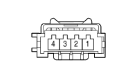

D070C DRIVER'S SEAT COUPLING (REAR)
- Path
- Electrical equipment > 3 CONNECTORS > D INTERMEDIATE COUPLINGS > D070 DRIVER'S SEAT COUPLING > D070C DRIVER'S SEAT COUPLING (REAR)
- Kind
- connector pinout (pin -> wire colour -> other end)
- Applies to
- engines: 2.0 16V JTD, 2.2 16V JTD; all production periods; only with equipment: MY 2005
- Interactive page
- https://sloeber94.github.io/elrnDB-fUlss/en/#/179009785
Applies to: engines: 2.0 16V JTD, 2.2 16V JTD; all production periods; only with equipment: MY 2005

Wiring | Colour |
|---|---|
VERDE (green) |
Pin | Cable | Destination | |||
|---|---|---|---|---|---|
Sec.. | Colour | Node | Connect. | Pin | |
1 | 0,5 | C - Q040A | 1 | ||
2 | 0,5 | 6506 | 10 | ||
3 | 0,5 | 6308B | 37 | ||
4 | 0,5 | GV - M473B | X | 1 | |
16 | |||||
16 | |||||
4 | |||||
1 | |||||
3 | |||||
1 | |||||
3 | |||||
Topics linked from this page (12)
- 25 REAR
- C020D PASSENGER SIDE DASHBOARD EARTH (REAR)
- D030 DRIVER'S FRONT DOOR COUPLING
- D031 PASSENGER FRONT DOOR COUPLING
- D071C PASSENGER SEAT COUPLING (REAR)
- I040 HANDBRAKE APPLIED SWITCH
- K125 RAIN AND DUSK SENSOR
- M001L BODY COMPUTER (REAR)
- M060 AIR BAG CONTROL UNIT
- M091 SLEWING CONTROL UNIT
- P051 Current socket in dashboard
- Q040 DRIVER'S HEAD BAG
Topics that link to this page (25)
- C020D PASSENGER SIDE DASHBOARD EARTH (REAR)
- C020D PASSENGER SIDE DASHBOARD EARTH (REAR)
- D030 DRIVER'S FRONT DOOR COUPLING (REAR)
- D031 PASSENGER FRONT DOOR COUPLING (REAR)
- D071C PASSENGER SEAT COUPLING (REAR)
- I040 HANDBRAKE APPLIED SWITCH (REAR)
- I040 HANDBRAKE APPLIED SWITCH (REAR)
- I046 DRIVER'S SEAT BELT SWITCH (LEFT SEAT)
- I046 DRIVER'S SEAT BELT SWITCH (LEFT SEAT)
- K125 RAIN AND DUSK SENSOR (REAR)
- M001L BODY COMPUTER (REAR)
- M001L BODY COMPUTER (REAR)
- M001L BODY COMPUTER (REAR)
- M001L BODY COMPUTER (REAR)
- M060 AIR BAG CONTROL UNIT (REAR)
- M060 AIR BAG CONTROL UNIT (REAR)
- M091 SLEWING CONTROL UNIT (REAR)
- P051 Current socket in dashboard (REAR)
- P051 Current socket in dashboard (REAR)
- Q030A DRIVER'S SIDEBAG (LEFT SEAT)
- Q030A DRIVER'S SIDEBAG (LEFT SEAT)
- Q030B DRIVER'S SIDEBAG (LEFT SEAT)
- Q030B DRIVER'S SIDEBAG (LEFT SEAT)
- Q040 DRIVER'S HEAD BAG (REAR)
- Q040 DRIVER'S HEAD BAG (REAR)